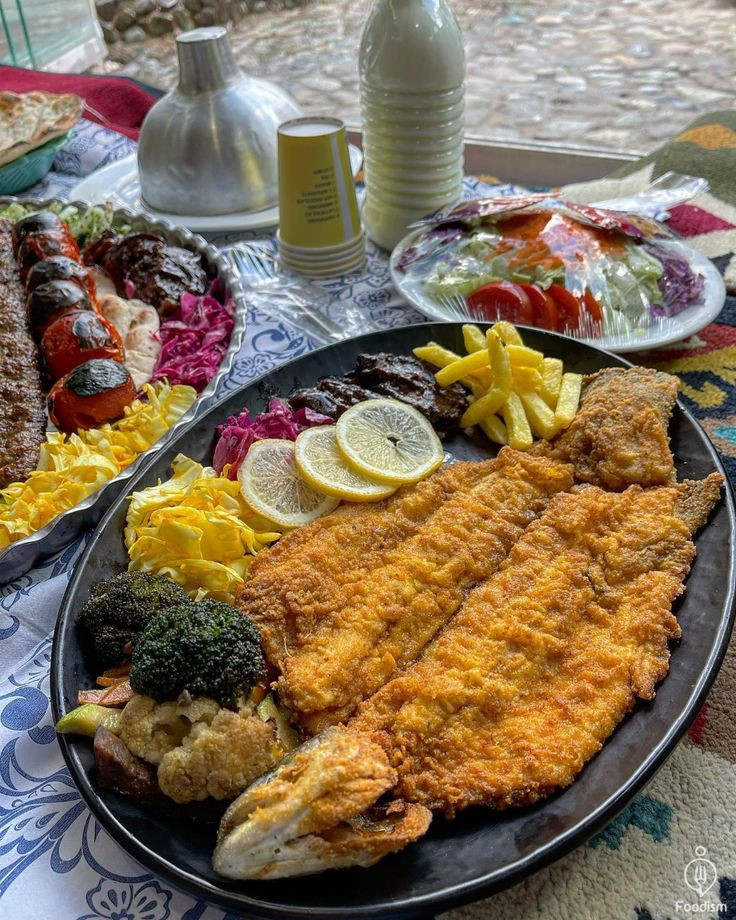

Fried Fish

- Clean the Fish: Remove scales, guts, and bones.
- Marinate: Season with lemon juice, salt, turmeric, peper, and garlic(let it sit for at least 30 minutes)
- Cook: Fry in hot oil or grill in theoven/pan until golden
Pizza

- Pizza dough: Mix flour, Water, yeast, salt, and a bit of oil. knead and let it rise.
- Pizza sauce:Mix tomato paste,garlic,salt,pepper,and somespices.
- Roll out the dough: flatten the dough and place it on a tray.
- Add sauce and toppings: spread the sauce, add cheese andyour favorite toppings like mushrooms,meat,bell peppers,etc
- Bake: Bake at 200 c (about 400 F ) for 15-20 minutes.
Rotisserie Chicken

- Clean the chicken: wash and pat dry the whole shicken.
- Marinate: Seasson with salt, pepper, Turmeric,lemon juice, garlic, onion, and your favorite spices. let it
rest in the fridge for a few hours.
- Cook: Roast in the oven at 180-200 c for about 1.5 to 2 hours, or use a rotisserie until fully cooked and golden.
Homemade Burger

- Prepare the meat: Mix ground beef with salt, pepper, and your favorite spices.
- Shape the patties: From into round, flat patties.
- Cook: grill or pan-fry over medium heat until sone.
- Serve: Place in a burger bun with lettuce, tomato, pickles, and your favorite sauce.